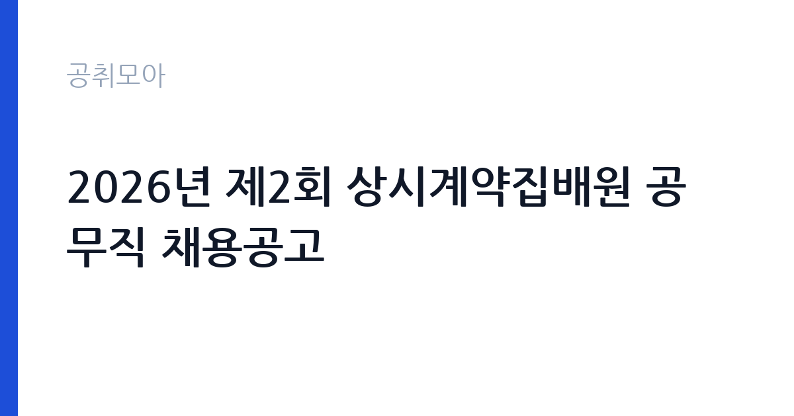

[국가기관] 2026년 제2회 상시계약집배원 공무직 채용공고
과학기술정보통신부 우정사업본부 경인지방우정청 백령우체국 · 인천 · 마감 2026-10-27 (D-8) · 출처 나라일터

한눈에 보는 모집 조건
| 기관 | 과학기술정보통신부 우정사업본부 경인지방우정청 백령우체국 |
|---|---|
| 공고명 | 2026년 제2회 상시계약집배원 공무직 채용공고 |
| 고용형태 | 공무직 |
| 근무지 | 인천 |
| 게시일 | 2026-10-19 |
| 마감일 | 2026-10-27 (D-8) |
지원자격, 이렇게 읽으세요
- 공무직 상시계약집배원 1명
- 접수 ~2026-10-27 마감
- 세부 조건은 원문 공고문 확인
공무직 상시계약집배원은 우정사업본부가 직접 고용하는 무기계약 근로자입니다. 공무원은 아니지만 근로기간에 정함이 없어 정년까지 근무할 수 있습니다. 응시자격의 세부 조항은 첨부 공고문에 있으므로 원문을 확인해야 합니다. 일반적으로 집배원 채용에서는 운전면허 등 업무 수행에 필요한 요건과 신체 조건, 결격사유 여부를 확인합니다. 이번 공고의 가장 큰 특징은 근무지입니다. 백령도는 인천 옹진군에 속한 섬으로, 육지에서 여객선으로 이동해야 합니다. 거주지 요건이 별도로 명시되지 않았더라도, 실제로 근무하려면 섬 생활이 가능해야 합니다. 접수 전에 주거와 생활 여건을 먼저 판단하십시오.
이 공고의 포인트
이 공고의 핵심은 무기계약이라는 신분입니다. 집배원 업무를 무기계약으로 시작할 수 있는 자리는 많지 않고, 한 번 임용되면 정년까지 근무가 가능합니다. 두 번째는 경쟁률입니다. 근무지가 백령도라는 점 때문에 지원자가 크게 줄어드는 경향이 있습니다. 섬 근무를 감수할 수 있다면 실질적인 기회입니다. 세 번째는 전형 속도입니다. 서류 발표가 10월 28일, 실기와 면접이 10월 29일, 최종 발표가 10월 30일로 사흘 안에 끝납니다. 준비 기간이 짧은 대신 결과도 빠르게 나옵니다.
전형은 어떻게 진행되나
전형은 서류전형, 실기, 면접 순으로 진행됩니다. 서류 합격자는 10월 28일에 발표되고, 실기와 면접은 10월 29일에 치러집니다. 실기에서는 집배 업무 수행에 필요한 기본 능력을 확인하고, 면접에서는 근무 태도와 지역 적응 의지를 봅니다. 최종합격자는 10월 30일에 발표됩니다. 전형 일정이 사흘로 압축돼 있으므로, 서류를 낸 직후부터 실기와 면접을 준비해야 합니다. 특히 백령도까지 이동해야 하므로, 면접 일정이 확정되면 배편 시간을 먼저 확인하십시오. 배편은 날씨에 따라 결항될 수 있어 하루 전 이동이 안전합니다.
원문에서 확인한 전형 방식
2026년 제2회 백령우체국 주관 공무직 상시계약집배원 채용 공고 1. 채용직종: 공무직 상시계약집배원 2. 채용인원: 1명 3. 근로기간: 무기계약 4. 근무예정지역: 백령우체국 5. 원서접수일자: 2026. 10. 19.(월) ~ 2026. 10. 27.(화) 6. 서류합격자발표: 2026. 10. 28.(수) 7. 실기 및 면접: 2026. 10. 29.(목) 8. 최종합격자 발표: 2026. 10. 30.(금) * 자세한 사항은 첨부된 공고문을 확인해 주시기 바랍니다.
이런 분께 추천해요
- 백령도에서 근무할 수 있는 분 — 섬 생활이 가능해야 합니다
- 무기계약 공무직으로 장기 근무를 원하는 분 — 정년까지 근무 가능합니다
- 10월 28~30일 전형 일정에 맞출 수 있는 분 — 사흘 만에 끝납니다
지원 전 체크리스트
- 백령도 거주 또는 이주가 가능한가 — 실제 근무지가 섬입니다
- 10월 29일 실기·면접에 참석할 수 있는가 — 배편 결항 가능성을 감안하십시오
- 운전면허 등 업무 수행 요건을 충족하는가 — 원문 공고문에서 확인하십시오
- 마감일 2026-10-27 이전에 접수했는가
모집 일정과 제출 타이밍
마감은 2026년 10월 27일입니다. 접수 시작이 10월 19일이므로 준비 기간은 8일입니다. 서류 발표가 다음 날인 10월 28일, 실기와 면접이 10월 29일이므로, 서류 제출과 동시에 실기 준비를 시작해야 합니다. 백령도로 이동해야 한다면 10월 28일 배편으로 들어가 하룻밤 숙박하는 일정이 안전합니다. 최종합격 발표가 10월 30일이고 채용 절차가 빠르게 진행되므로, 합격 후 바로 근무할 수 있도록 생활 준비를 미리 해두십시오.
직무 이해하기: 국가기관
우체국 집배원은 우편물과 소포를 수집하고 배달하는 업무를 맡습니다. 상시계약집배원은 담당 구역을 정해 순회하며 등기우편, 소포, 일반 우편물을 배달하고, 우체국 창구 업무를 보조하기도 합니다. 백령도는 섬 지역이라 구역 특성이 육지와 다릅니다. 마을 간 거리가 떨어져 있고, 기상 조건에 따라 배달 일정이 영향을 받습니다. 농어촌 소포배달원 업무가 함께 붙는 경우도 있습니다. 우편물은 개인의 재산과 직결되므로, 분실과 오배달을 막는 정확성이 가장 중요한 직무 역량입니다.
자기소개서 작성 팁
집배원 지원서는 성실성과 신체적 적응력을 보여주는 것이 핵심입니다. 첫 문단에 지원 동기를 쓰고, 백령도 근무가 가능하다는 점을 분명히 밝히십시오. 본론에서는 책임이 따르는 업무를 수행한 경험을 적으십시오. 배달, 물류, 운전, 고객 응대 경험이 있으면 구체적으로 쓰십시오. 몇 년간 운전했는지, 하루 몇 건을 처리했는지 같은 숫자가 도움이 됩니다. 마무리에는 섬 지역에서 장기 근무하겠다는 의사를 밝히십시오. 지방 근무를 피하려는 인상을 주면 감점됩니다. 거주 계획이 있다면 그 점을 적극적으로 쓰는 것이 좋습니다.
면접 준비 포인트
면접은 근무 태도와 지역 적응 중심입니다. 백령도에서 오래 근무할 수 있는지, 가족과 생활 문제는 어떻게 해결할지, 기상 악화로 배달이 지연될 때 어떻게 대응할지 같은 질문이 나옵니다. 답할 때는 현실적으로 말하십시오. 섬 근무가 가능한 이유를 구체적으로 설명하면 신뢰를 얻습니다. 실기에서는 기본적인 업무 수행 능력을 확인하므로, 공고문에 적힌 실기 종목을 미리 확인하고 준비하십시오. 복장은 단정하게, 답변은 짧고 분명하게 하는 것이 좋습니다.
급여·근무조건 읽는 법
보수는 우정사업본부의 공무직 보수 기준에 따라 정해지며, 원문 공고문의 처우 항목에서 확인해야 합니다. 이번 공고에서는 금액이 공개되지 않았으므로 구체적인 수치는 원문을 기준으로 하십시오. 공무직 상시계약집배원은 무기계약 신분으로, 기본급 외에 수당과 초과근무수당이 붙고 4대 보험과 퇴직급여가 적용됩니다. 섬 지역 근무에 따른 별도 수당이 있는지도 확인할 항목입니다. 주거 지원 여부는 공고문에 명시된 내용을 봐야 합니다. 실수령액은 세금과 보험료를 뺀 값이므로 표기 금액과 차이가 있습니다.
자주 묻는 질문
- 무기계약인가요?
네. 공고에 근로기간이 무기계약으로 명시돼 있습니다. 공무원은 아니지만 정년까지 근무가 가능합니다. - 근무지는 정확히 어디인가요?
인천 옹진군 백령도의 백령우체국입니다. 육지에서 여객선으로 이동해야 하는 섬 지역입니다. - 전형 일정은 어떻게 되나요?
서류 합격자 발표가 10월 28일, 실기와 면접이 10월 29일, 최종합격자 발표가 10월 30일입니다.
함께 보면 좋은 공고
[국가기관] 2026년 제5회 국립부곡병원 의무직 공무원 경력경쟁채용시험 공고 — 마감 2026-10-30[국가기관] 한국체육대학교 대학회계무기직원(미화원, 1명) 채용 공고 — 마감 2026-10-30[국가기관] 2026년 수도권대기환경청 기간제근로자 채용 공고 — 마감 2026-10-28출처: 나라일터 공개정보를 바탕으로 공취모아가 정리한 안내글입니다. 모집 조건·일정은 변경될 수 있으니 지원 전 반드시 원문 공고문을 확인하세요. 본 글은 정보 제공용이며 합격을 보장하지 않습니다.